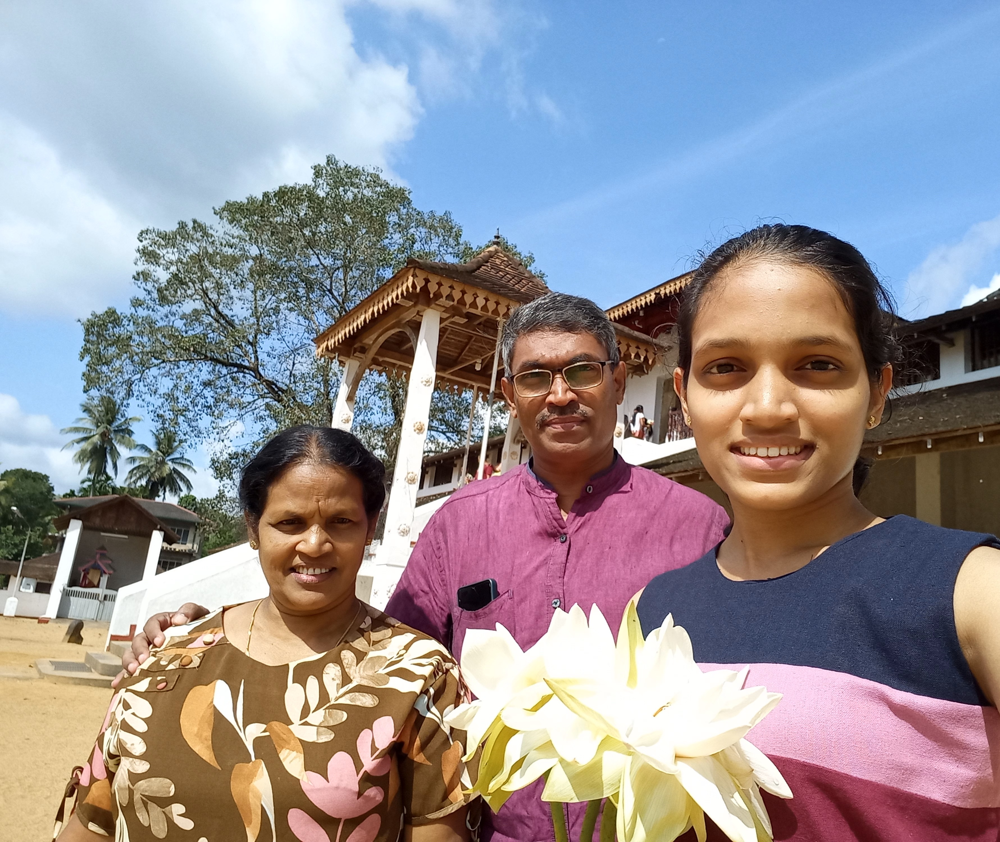

Father
My father, Sarath Senaratne, is a remarkable individual at 58 years old.
Currently serving as the Deputy Chief Secretary (Finance) at the
Sabaragamuwa Provincial Council, he exemplifies dedication and expertise
in his professional role. Beyond his career, he is an exemplary father,
embodying qualities of love, guidance, and support. His commitment to
both family and career showcases a balance of responsibility and
compassion. Known for his wisdom, he imparts valuable life lessons and
serves as a source of inspiration. As the head of our family, his
unwavering commitment to our well-being makes him not only a good father
but a pillar of strength and wisdom in our lives.
